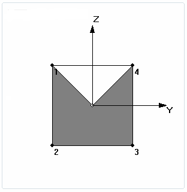

Beam properties
You can review beam properties for a beam cross section to understand the results of a frame model analysis. You also can view beam stress plots of the stress recovery points on the beam cross section.
Reviewing beam stress recovery locations and cross section properties
You can review beam stress recovery locations for a beam cross section in a structural frame model using the Beam Properties dialog box.
-
To open the dialog box from the Simulation pane, expand the Geometry node, and select the View Beam Properties command on the shortcut menu of a frame component.

The top of the dialog box shows the stress location points.

The bottom of the dialog box reports values from the results of the analysis, including:
-
Area
-
Moments of Inertia
-
Torsional Constants
-
Shear Area
-
Nonstructural mass and length
-
Warping constant
-
Perimeter
-
Neutral Axis Offset

While not editable, you can copy this information to be used in Femap. Refer to Femap help for more information.
-
Element Coordinate System
The element X axis goes from the first beam element node to the second beam element node. The element Y axis is perpendicular to the element X axis. It points from the first node toward the orientation (or third) node. If you use an orientation vector, the Y axis points from the first node in the direction of the orientation vector. The element Z axis is determined from the cross product of the element X and Y axes.
-
Stress recovery points
Stress recovery locations define positions in the elemental YZ plane where you want the analysis program to calculate stresses. In Solid Edge Simulation, these points are calculated automatically by Femap; there are no controls for altering these point locations.
In Femap, however, you can modify the stress recovery and reference points on the cross section using the following resources
-
In the Stress Recovery section of the Cross Section Definition dialog box.
-
In the Stress Recovery section of the Define Property dialog box.
-
-
Releases
You can define a release, which removes the connection between selected element degrees of freedom and the beam element nodes.
-
Offset vectors
Offset vectors defined on the element move the neutral axis and shear center from the nodes. Neutral Axis Offsets (Y,Z) move the neutral axis away from the shear center. If there are no neutral axis offsets, the neutral axis and shear center are coincident. If there are no offsets, both the neutral axis and shear center lie directly between the nodes.
Viewing result plots of stress recovery points
You can view the result plots for stresses at each recovery point by viewing the Beam stress recovery point plots in the Simulation Results environment.
How do I
Define a releasePlot results
Learn more
Plotting resultsResult plots for mixed mesh models
Displacement component plots
Stress component plots
Constraint component plots
Strain component plots
Beam reaction component plots
Beam stress component plots
Beam diagrams
Temperature plots
Heat flux component plots
Applied temperature plots